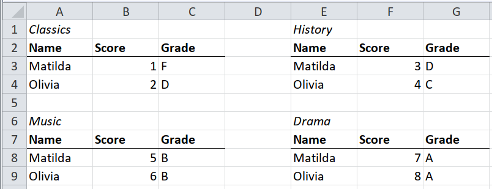
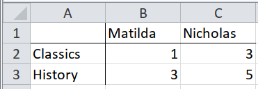
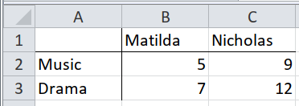
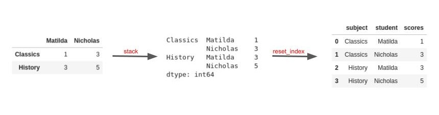
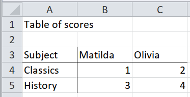
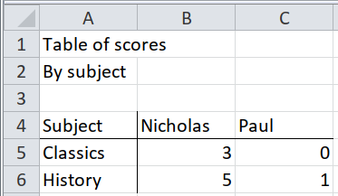
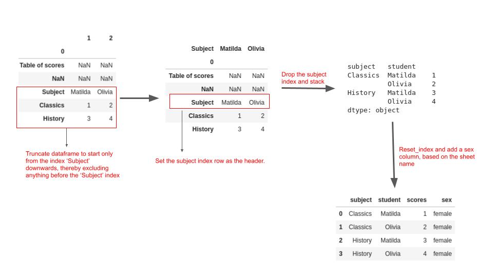
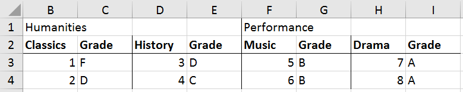
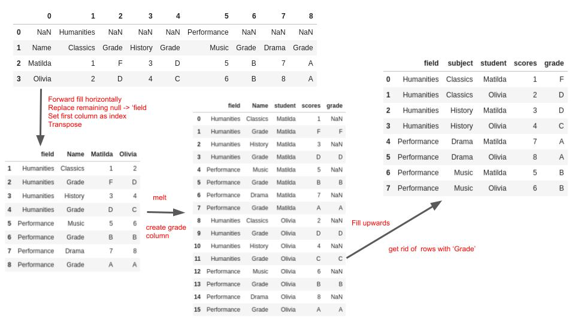

SpreadSheet Munging Strategies in Python - Small Multiples#
Small Multiples#
updated : September 25, 2024
This is part of a series of blog posts about extracting data from spreadsheets using Python. It is based on the book written by Duncan Garmonsway, which was written primarily for R users. Links to the other posts are on the sidebar.
The key takeaway is this - you understand your data layout; use the tools to achieve your end goal. xlsx_cells offers a way to get the cells in a spreadsheet into individual rows, with some metadata. The final outcome however relies on your understanding of the data layout and its proper application.
Small multiples refer to mini tables embedded in a spreadsheet, or multiple spreadsheets. Ideally, this tables should be lumped into one dataframe for meaningful analysis. The examples below show different scenarios and how we can reshape the data
Case 1 : Small Multiples with all Headers Present for Each Multiple#

In this spreadsheet, each table is a separate subject. It would be better to aggregate all the subjects and underlying data into one table.
# pip install pyjanitor
import pandas as pd
import janitor as jn
import sys
import numpy as np
print('pandas version: ', pd.__version__)
print('janitor version: ', jn.__version__)
print('python version: ', sys.version)
print('numpy version: ', np.__version__)
pandas version: 3.1.0
janitor version: 0.32.65
python version: 3.11.17 (main, Oct 1 2026, 14:32:31) [GCC 13.3.0]
numpy version: 2.4.6
excel_file = pd.ExcelFile("Data_files/worked-examples.xlsx")
frame = jn.xlsx_cells(
excel_file,
sheetnames="small-multiples",
font=True,
include_blank_cells=False,
).astype({"row": np.int8, "column": np.int8})
frame.head()
| value | internal_value | coordinate | row | column | data_type | is_date | number_format | font | |
|---|---|---|---|---|---|---|---|---|---|
| 0 | Classics | Classics | A1 | 1 | 1 | s | False | General | {'name': 'Calibri', 'family': 2.0, 'sz': 11.0,... |
| 1 | History | History | E1 | 1 | 5 | s | False | General | {'name': 'Calibri', 'family': 2.0, 'sz': 11.0,... |
| 2 | Name | Name | A2 | 2 | 1 | s | False | General | {'name': 'Calibri', 'family': 2.0, 'sz': 11.0,... |
| 3 | Score | Score | B2 | 2 | 2 | s | False | General | {'name': 'Calibri', 'family': 2.0, 'sz': 11.0,... |
| 4 | Grade | Grade | C2 | 2 | 3 | s | False | General | {'name': 'Calibri', 'family': 2.0, 'sz': 11.0,... |
We know this much:
the data are in three columns (
Name,Score,Gradeare the headers)the data is not in bold/italic fonts
Let’s apply this knowledge to grab the data:
italics = frame.font.str.get("i")
bold = frame.font.str.get("b")
strings = frame.data_type.eq("s")
booleans = ~italics & ~bold
data = frame.loc[booleans, ["value", "row", "column"]]
data
| value | row | column | |
|---|---|---|---|
| 8 | Matilda | 3 | 1 |
| 9 | 1 | 3 | 2 |
| 10 | F | 3 | 3 |
| 11 | Matilda | 3 | 5 |
| 12 | 3 | 3 | 6 |
| 13 | D | 3 | 7 |
| 14 | Olivia | 4 | 1 |
| 15 | 2 | 4 | 2 |
| 16 | D | 4 | 3 |
| 17 | Olivia | 4 | 5 |
| 18 | 4 | 4 | 6 |
| 19 | C | 4 | 7 |
| 28 | Matilda | 8 | 1 |
| 29 | 5 | 8 | 2 |
| 30 | B | 8 | 3 |
| 31 | Matilda | 8 | 5 |
| 32 | 7 | 8 | 6 |
| 33 | A | 8 | 7 |
| 34 | Olivia | 9 | 1 |
| 35 | 6 | 9 | 2 |
| 36 | B | 9 | 3 |
| 37 | Olivia | 9 | 5 |
| 38 | 8 | 9 | 6 |
| 39 | A | 9 | 7 |
# we know there are three columns per subset of data
extract = data.value.array.reshape((-1, 3))
extract
<StringArray>
[
['Matilda', '1', 'F'],
['Matilda', '3', 'D'],
['Olivia', '2', 'D'],
['Olivia', '4', 'C'],
['Matilda', '5', 'B'],
['Matilda', '7', 'A'],
['Olivia', '6', 'B'],
['Olivia', '8', 'A']
]
Shape: (8, 3), dtype: str
# apply same concept to reshape the row and column
# required to pair the subjects to the data
rows = data.row.array.reshape((-1, 3))[:, 0]
rows
<NumpyExtensionArray>
[3, 3, 4, 4, 8, 8, 9, 9]
Length: 8, dtype: int8
columns = data.column.array.reshape((-1, 3))[:, 0]
columns
<NumpyExtensionArray>
[1, 5, 1, 5, 1, 5, 1, 5]
Length: 8, dtype: int8
Get the headers, and create a DataFrame of extract, along with rows:
headers = frame.loc[bold, "value"].unique()
headers
<StringArray>
['Name', 'Score', 'Grade']
Length: 3, dtype: str
extract = (
pd.DataFrame(extract, columns=headers)
.assign(row=rows, column=columns)
# order necessary for when patching subjects
# into the DatFrame
.astype({"Score": np.int8})
.sort_values(["column", "row"])
)
extract
| Name | Score | Grade | row | column | |
|---|---|---|---|---|---|
| 0 | Matilda | 1 | F | 3 | 1 |
| 2 | Olivia | 2 | D | 4 | 1 |
| 4 | Matilda | 5 | B | 8 | 1 |
| 6 | Olivia | 6 | B | 9 | 1 |
| 1 | Matilda | 3 | D | 3 | 5 |
| 3 | Olivia | 4 | C | 4 | 5 |
| 5 | Matilda | 7 | A | 8 | 5 |
| 7 | Olivia | 8 | A | 9 | 5 |
All that is left is to pair the subjects(italicized) with the extract DataFrame.
We know that the subject has a difference of two, row-wise to the first entry in the sub data:
subjects = (
frame.loc[italics, ["value", "row", "column"]]
.assign(row=lambda f: f.row.add(2))
.rename(columns={"value": "subject"})
)
subjects
| subject | row | column | |
|---|---|---|---|
| 0 | Classics | 3 | 1 |
| 1 | History | 3 | 5 |
| 20 | Music | 8 | 1 |
| 21 | Drama | 8 | 5 |
outcome = (
extract
# notice the join order
# join on the columns first, before the row
# to ensure correct output
.merge(subjects, how="left", on=["column", "row"])
.assign(Subject=lambda f: f.subject.ffill())
.loc[:, ["Name", "Subject", "Score", "Grade"]]
)
outcome
| Name | Subject | Score | Grade | |
|---|---|---|---|---|
| 0 | Matilda | Classics | 1 | F |
| 1 | Olivia | Classics | 2 | D |
| 2 | Matilda | Music | 5 | B |
| 3 | Olivia | Music | 6 | B |
| 4 | Matilda | History | 3 | D |
| 5 | Olivia | History | 4 | C |
| 6 | Matilda | Drama | 7 | A |
| 7 | Olivia | Drama | 8 | A |
Case 2 : Same table in several worksheets/files (using the sheet/file name)#


For this case, our data is in different worksheets. We can iterate through each worksheet and combine the dataframes into one.
We do not need xlsx_cells for this - pandas is sufficient:
extract = [
excel_file.parse(sheet_name=sheetname, index_col=0)
for sheetname in ("humanities", "performance")
]
extract
/tmp/ipykernel_2983/3622490512.py:2: Pandas4Warning: ExcelFile.parse is deprecated. Use pd.read_excel instead.
excel_file.parse(sheet_name=sheetname, index_col=0)
/tmp/ipykernel_2983/3622490512.py:2: Pandas4Warning: ExcelFile.parse is deprecated. Use pd.read_excel instead.
excel_file.parse(sheet_name=sheetname, index_col=0)
[ Matilda Nicholas
Classics 1 3
History 3 5,
Matilda Nicholas
Music 5 9
Drama 7 12]
Combine the individual dataframes into one:
(
pd.concat(extract)
.rename_axis(index="subject", columns="student")
.stack(future_stack=True)
.rename("scores")
.reset_index()
)
| subject | student | scores | |
|---|---|---|---|
| 0 | Classics | Matilda | 1 |
| 1 | Classics | Nicholas | 3 |
| 2 | History | Matilda | 3 |
| 3 | History | Nicholas | 5 |
| 4 | Music | Matilda | 5 |
| 5 | Music | Nicholas | 9 |
| 6 | Drama | Matilda | 7 |
| 7 | Drama | Nicholas | 12 |
The image below illustrates the core concepts of the above solution:

Case 3 : Same table in several worksheets/files but in different positions#


This is similar to Case 2, with the core data been the same. Here we need to pick rows from Subject downwards only, as that is the only relevant data:
extract = {
sheetname: excel_file.parse(sheet_name=sheetname, header=None, index_col=0).loc[
"Subject":
]
# use the subject row as column names
.row_to_names(0) # pyjanitor method
.drop(index="Subject")
.rename_axis(index="subject", columns="student")
.stack(future_stack=True)
for sheetname in ("female", "male")
}
extract
/tmp/ipykernel_2983/2911045527.py:2: Pandas4Warning: ExcelFile.parse is deprecated. Use pd.read_excel instead.
sheetname: excel_file.parse(sheet_name=sheetname, header=None, index_col=0).loc[
/tmp/ipykernel_2983/2911045527.py:2: Pandas4Warning: ExcelFile.parse is deprecated. Use pd.read_excel instead.
sheetname: excel_file.parse(sheet_name=sheetname, header=None, index_col=0).loc[
{'female': subject student
Classics Matilda 1
Olivia 2
History Matilda 3
Olivia 4
dtype: object,
'male': subject student
Classics Nicholas 3
Paul 0
History Nicholas 5
Paul 1
dtype: object}
Combine the individual dataframes into one:
(pd.concat(extract, names=["sex"]).rename("scores").reset_index())
| sex | subject | student | scores | |
|---|---|---|---|---|
| 0 | female | Classics | Matilda | 1 |
| 1 | female | Classics | Olivia | 2 |
| 2 | female | History | Matilda | 3 |
| 3 | female | History | Olivia | 4 |
| 4 | male | Classics | Nicholas | 3 |
| 5 | male | Classics | Paul | 0 |
| 6 | male | History | Nicholas | 5 |
| 7 | male | History | Paul | 1 |
The image below explains the main concepts of the solution above :

Case 4 : Implied multiples#

For this case, we have the fields at the top, followed by the subjects and grade for each subject. the student names is the very first column.
The goal is to get the subjects,grades and scores per field, per student and combine into one.
frame = frame = jn.xlsx_cells(
excel_file,
sheetnames="implied-multiples",
font=True,
include_blank_cells=False,
).astype({"row": np.int8, "column": np.int8})
frame.head()
| value | internal_value | coordinate | row | column | data_type | is_date | number_format | font | |
|---|---|---|---|---|---|---|---|---|---|
| 0 | Humanities | Humanities | B1 | 1 | 2 | s | False | General | {'name': 'Calibri', 'family': 2.0, 'sz': 11.0,... |
| 1 | Performance | Performance | F1 | 1 | 6 | s | False | General | {'name': 'Calibri', 'family': 2.0, 'sz': 11.0,... |
| 2 | Name | Name | A2 | 2 | 1 | s | False | General | {'name': 'Calibri', 'family': 2.0, 'sz': 11.0,... |
| 3 | Classics | Classics | B2 | 2 | 2 | s | False | General | {'name': 'Calibri', 'family': 2.0, 'sz': 11.0,... |
| 4 | Grade | Grade | C2 | 2 | 3 | s | False | General | {'name': 'Calibri', 'family': 2.0, 'sz': 11.0,... |
# fields are on the very first row
fields = frame.loc[frame.row == 1, ["value", "column"]]
fields = fields.rename(columns={"value": "field"})
fields
| field | column | |
|---|---|---|
| 0 | Humanities | 2 |
| 1 | Performance | 6 |
Get the subjects(bold fonts) and merge with fields:
booleans = frame.font.str.get("b") & frame.column.gt(1)
subjects = (
frame.loc[booleans, ["value", "column"]]
.rename(columns={"value": "subject"})
.merge(fields, on="column", how="left")
# subject will be repeated for every paired score and grade
# field will be repeated for every paired subject
.assign(subject=lambda f: f.subject.where(f.subject != "Grade"))
.ffill()
)
subjects
| subject | column | field | |
|---|---|---|---|
| 0 | Classics | 2 | Humanities |
| 1 | Classics | 3 | Humanities |
| 2 | History | 4 | Humanities |
| 3 | History | 5 | Humanities |
| 4 | Music | 6 | Performance |
| 5 | Music | 7 | Performance |
| 6 | Drama | 8 | Performance |
| 7 | Drama | 9 | Performance |
Get the data (third row and below):
data = frame.loc[frame.row.gt(2) & frame.column.gt(1), ["value", "row", "column"]]
rows = data.loc[:, "row"]
columns = data.loc[:, "column"]
# We know the columns are in pairs
# (subject, followed by grade):
data = data.value.array.reshape((-1, 2))
# apply the same logic to row:
rows = rows.array.reshape((-1, 2))[:, 0]
# and column:
columns = columns.array.reshape((-1, 2))[:, 0]
data = pd.DataFrame(data, columns=["score", "grade"]).assign(row=rows, column=columns)
data
| score | grade | row | column | |
|---|---|---|---|---|
| 0 | 1 | F | 3 | 2 |
| 1 | 3 | D | 3 | 4 |
| 2 | 5 | B | 3 | 6 |
| 3 | 7 | A | 3 | 8 |
| 4 | 2 | D | 4 | 2 |
| 5 | 4 | C | 4 | 4 |
| 6 | 6 | B | 4 | 6 |
| 7 | 8 | A | 4 | 8 |
Get the student names, and join to data:
outcome = (
frame.loc[frame.column.eq(1) & frame.row.gt(2), ["value", "row"]]
.rename(columns={"value": "student"})
.merge(data, on="row")
.merge(subjects, on="column")
.loc[:, ["student", "field", "subject", "score", "grade"]]
)
outcome
| student | field | subject | score | grade | |
|---|---|---|---|---|---|
| 0 | Matilda | Humanities | Classics | 1 | F |
| 1 | Matilda | Humanities | History | 3 | D |
| 2 | Matilda | Performance | Music | 5 | B |
| 3 | Matilda | Performance | Drama | 7 | A |
| 4 | Olivia | Humanities | Classics | 2 | D |
| 5 | Olivia | Humanities | History | 4 | C |
| 6 | Olivia | Performance | Music | 6 | B |
| 7 | Olivia | Performance | Drama | 8 | A |
Another route, without xlsx_cells:
(
excel_file.parse(sheet_name="implied-multiples", header=None)
.ffill(axis=1)
.fillna("field")
.set_index(0)
.T.melt(id_vars=["field", "Name"], var_name="student", value_name="scores")
.assign(grade=lambda x: x.loc[x.Name == "Grade", "scores"])
# scores are above grades per student
# hence the bfill
.bfill()
.query('Name != "Grade"')
.rename(columns={"Name": "subject"})
)
/tmp/ipykernel_2983/982260628.py:2: Pandas4Warning: ExcelFile.parse is deprecated. Use pd.read_excel instead.
excel_file.parse(sheet_name="implied-multiples", header=None)
| field | subject | student | scores | grade | |
|---|---|---|---|---|---|
| 0 | Humanities | Classics | Matilda | 1 | F |
| 2 | Humanities | History | Matilda | 3 | D |
| 4 | Performance | Music | Matilda | 5 | B |
| 6 | Performance | Drama | Matilda | 7 | A |
| 8 | Humanities | Classics | Olivia | 2 | D |
| 10 | Humanities | History | Olivia | 4 | C |
| 12 | Performance | Music | Olivia | 6 | B |
| 14 | Performance | Drama | Olivia | 8 | A |
And a visual illustration of the steps is shown below:

Comments#